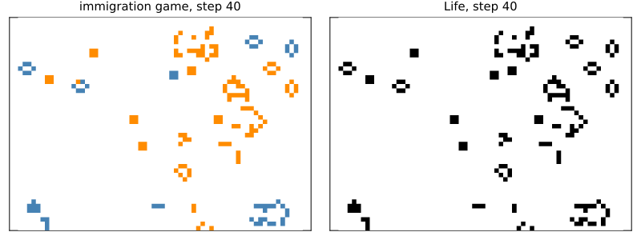
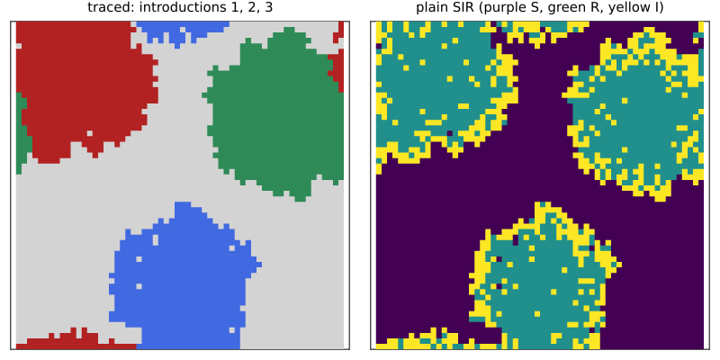

Maps between models
Simon Frost
- Overview
- The immigration game and Life
- Tracing introductions of a disease
- When a label feeds back
- A category of models
- Parameters, and composites
- Maps of models and maps of spaces
- Summary
Overview
Models are often refinements of one another. A model may carry a label that the dynamics never read: which introduction a case of a disease descends from, or which of two colonies a live cell belongs to. Forgetting the label should give the plainer model, run for run. This vignette makes that precise, as maps between models, and checks it on CellularAutomataCore models.
A map of models M → N is a map h from the cell states of M to those of N, applied cell by cell, with a map of parameters, that commutes with the rules. That means the next state of M, mapped by h, is the next state of N computed from the mapped cell and neighbours, for every local configuration, with the same cell, time and seed. Then every run of M, mapped by h, is the run of N from the mapped initial state. For stochastic models this holds run by run, not only in distribution: both models draw the same counter-based random numbers. Models and these maps form a category, and moving models along maps of spaces is a functor on it.
This is a research extension, beyond the papers the package implements. The Lean library in proofs/ proves the laws (ModelMap.run_map, the Category instance, SpaceMap.pullFunctor).
ENV["GKSwstype"] = "100"
using CategoricalCellularAutomata
using CellularAutomataCore: CellularAutomataCore, CAProblem, solve, Torus, VonNeumann,
Moore, @camodel, bernoulli, uniform
using Catlab: @relation, compose, id, dom, codom
using Plots
using RandomThe immigration game and Life
The immigration game is Life with two colours of live cells. A live cell keeps its colour; a birth takes the colour that most of its three live neighbours have. Births and deaths do not depend on the colours, so forgetting them should give Life.
life = @camodel Life begin
@states alive::Int = 0 ∈ (0, 1)
@neighbourhood Moore(1)
@rule begin
n = sum(nbrs)
cell == 1 ? Int(n == 2 || n == 3) : Int(n == 3)
end
end
immigration = @camodel Immigration begin
@states colour::Int = 0 ∈ (0, 1, 2)
@neighbourhood Moore(1)
@rule begin
n = count(!=(0), nbrs)
if cell != 0
n == 2 || n == 3 ? cell : 0
elseif n == 3
count(==(1), nbrs) >= 2 ? 1 : 2
else
0
end
end
end
forget = ModelMap(immigration, life, c -> Int(c != 0))ModelMap(Immigration → Life)is_model_map checks the commuting condition on every local configuration: here all 3^9 patterns of a cell and its eight neighbours. Life’s rule does not read the cell context, so this check proves the map. Keeping only one colour alive is not a map of models:
(forget=is_model_map(forget; contexts=1),
one_colour=is_model_map(ModelMap(immigration, life, c -> Int(c == 1)); contexts=1))(forget = true, one_colour = false)pushforward(f, prob) maps a problem of the domain to one of the codomain, from the mapped initial state. Its run is the original run with the colours forgotten:
prob = CAProblem(immigration, (; colour=rand(Xoshiro(3), 0:2, 64, 48)), 40;
space=Torus(64, 48))
sol = solve(prob)
plain = solve(pushforward(forget, prob))
all(t -> pushforward(forget, sol.u[t]) == plain.u[t], eachindex(sol.u))trueplot(heatmap(sol.u[end]'; c=cgrad([:white, :darkorange, :steelblue]; categorical=true),
colorbar=false, clims=(0, 2), title="immigration game, step 40"),
heatmap(plain.u[end]'; c=cgrad([:white, :black]; categorical=true), colorbar=false,
clims=(0, 1), title="Life, step 40");
layout=(1, 2), size=(800, 300), aspect_ratio=1, framestyle=:box, ticks=false,
yflip=true, titlefontsize=10)
Tracing introductions of a disease
A disease spreads through a field from three introductions. The plain model is SIR on the von Neumann neighbourhood. The traced model also records, for each case, the introduction it descends from. A newly infected cell takes the label of one of its infected neighbours, chosen with a draw number of its own. So the infection itself draws exactly as in the plain model, and the label never feeds back on who is infected.
sir = @camodel SIR begin
@states state::Symbol = :S ∈ (:S, :I, :R)
@parameters β = 0.4 γ = 0.2
@neighbourhood VonNeumann(1)
@rule begin
if cell == :S
bernoulli(ctx, 1 - (1 - β)^count(==(:I), nbrs), 1) ? :I : :S
elseif cell == :I
bernoulli(ctx, γ, 2) ? :R : :I
else
cell
end
end
end
traced = @camodel TracedSIR begin
@states state::Symbol = :S ∈ (:S, :I, :R) lineage::Int = 0 ∈ 0:3
@parameters β = 0.4 γ = 0.2
@neighbourhood VonNeumann(1)
@rule begin
if cell.state == :S
k = count(n -> n.state == :I, nbrs)
if bernoulli(ctx, 1 - (1 - β)^k, 1)
j = clamp(ceil(Int, uniform(ctx, 3) * k), 1, k)
source = nbrs[findall(n -> n.state == :I, collect(nbrs))[j]]
(state=:I, lineage=source.lineage)
else
cell
end
elseif cell.state == :I
bernoulli(ctx, γ, 2) ? (state=:R, lineage=cell.lineage) : cell
else
cell
end
end
end
untrace = ModelMap(traced, sir, c -> c.state)
is_model_map(untrace)trueThe check covers every pattern of states and labels in a cell and its four neighbours, at eight cell contexts. Each context draws different random numbers, and both models must agree at each one. For a stochastic rule this samples the random numbers rather than proving the map; here the map holds for all of them, because both models read draws 1 and 2 in the same way. The traced run, with its labels forgotten, is the plain run from the same introductions, at every step:
ports = Dict(CartesianIndex(10, 12) => 1, CartesianIndex(50, 18) => 2,
CartesianIndex(30, 50) => 3)
start = (; state=I -> haskey(ports, I) ? :I : :S, lineage=I -> get(ports, I, 0))
prob = CAProblem(traced, start, 80, (; β=0.45); space=Torus(60, 60), seed=4)
sol = solve(prob)
plain = solve(pushforward(untrace, prob))
all(t -> pushforward(untrace, sol.u[t]) == plain.u[t], eachindex(sol.u))truePart way through the epidemic, the labels show where each introduction’s descendants have gone (grey: not yet infected), while the plain model shows only who is susceptible, infected or recovered:
labels(u) = map((s, l) -> s == :S ? 0 : l, u.state, u.lineage)
code(u) = map(s -> s == :S ? 0 : s == :I ? 2 : 1, u)
snapshot = 26 # step 25
plot(heatmap(labels(sol.u[snapshot])';
c=cgrad([:lightgrey, :firebrick, :seagreen, :royalblue]; categorical=true),
colorbar=false, clims=(0, 3), title="traced: introductions 1, 2, 3"),
heatmap(code(plain.u[snapshot])'; c=:viridis, colorbar=false, clims=(0, 2),
title="plain SIR (purple S, green R, yellow I)");
layout=(1, 2), size=(800, 400), aspect_ratio=1, framestyle=:box, ticks=false,
yflip=true, titlefontsize=10)
When a label feeds back
If one introduction is a more transmissible strain, its label changes who gets infected, and forgetting it is no longer a map of models. The check fails on some local configuration, and the runs part. Both epidemics eventually reach almost every cell of the torus, so the difference shows in the timing:
virulent = @camodel VirulentSIR begin
@states state::Symbol = :S ∈ (:S, :I, :R) lineage::Int = 0 ∈ 0:3
@parameters β = 0.4 γ = 0.2
@neighbourhood VonNeumann(1)
@rule begin
if cell.state == :S
escape = prod((n.state == :I ? (n.lineage == 3 ? 0.2 : 1 - β) : 1.0
for n in nbrs); init=1.0)
k = count(n -> n.state == :I, nbrs)
if bernoulli(ctx, 1 - escape, 1)
j = clamp(ceil(Int, uniform(ctx, 3) * k), 1, k)
source = nbrs[findall(n -> n.state == :I, collect(nbrs))[j]]
(state=:I, lineage=source.lineage)
else
cell
end
elseif cell.state == :I
bernoulli(ctx, γ, 2) ? (state=:R, lineage=cell.lineage) : cell
else
cell
end
end
end
drop = ModelMap(virulent, sir, c -> c.state)
vprob = CAProblem(virulent, start, 80, (; β=0.45); space=Torus(60, 60), seed=4)
vsol, vplain = solve(vprob), solve(pushforward(drop, vprob))
reached(u) = count(!=(:S), u)
(is_model_map=is_model_map(drop),
first_step_that_differs=findfirst(t -> pushforward(drop, vsol.u[t]) != vplain.u[t],
eachindex(vsol.u)) - 1,
reached_at_step_25_with_the_strain=reached(vsol.u[26].state),
reached_at_step_25_label_forgotten=reached(vplain.u[26]))(is_model_map = false, first_step_that_differs = 1, reached_at_step_25_with_the_strain = 2397, reached_at_step_25_label_forgotten = 1803)A category of models
Maps of models compose: cell states and parameters go through both maps. With identities, CellularAutomataCore models and their maps form a category, an instance of Catlab’s ThCategory. Merging introduction 3 into introduction 2 is a map from the traced model to itself, and following it by forgetting the labels is again a map of models, the same as forgetting them directly:
merge3 = ModelMap(traced, traced, c -> (state=c.state, lineage=min(c.lineage, 2)))
both = compose(merge3, untrace)
(merge_is_a_map=is_model_map(merge3), composite_is_a_map=is_model_map(both),
domain=dom(both).name, codomain=codom(both).name,
same_as_forgetting=all(u -> pushforward(both, u) == pushforward(untrace, u), sol.u),
identity=all(u -> pushforward(compose(id(traced), untrace), u) ==
pushforward(untrace, u), sol.u))(merge_is_a_map = true, composite_is_a_map = true, domain = :TracedSIR, codomain = :SIR, same_as_forgetting = true, identity = true)Parameters, and composites
A map of models also maps parameters. A composite built with oapply keeps each box’s parameters under the box’s name. Projecting a composite of SIR and a box that counts each cell’s days infected onto SIR maps the composite’s parameters to p.sir. It is a map of models when the boxes share random numbers. Otherwise the SIR box draws from a seed of its own, and the projection fails:
counter = @camodel Counter begin
@states state::Symbol = :S ∈ (:S, :I, :R) days::Int = 0
@neighbourhood VonNeumann(1)
@rule (state=cell.state, days=cell.days + (cell.state == :I))
end
d = @relation (state,) begin
sir(state)
counter(state)
end
boxes = (sir=OpenCAModel(sir), counter=OpenCAModel(counter; ports=[:state], reads=[:state]))
map([true, false]) do shared
comp = oapply(d, boxes; shared_randomness=shared)
proj = ModelMap(comp, sir, c -> c.state; parameters=p -> p.sir)
cells = [(state=s, counter_days=n) for s in (:S, :I, :R) for n in 0:2]
cprob = CAProblem(comp, (; state=start.state), 60,
(; sir=(β=0.45, γ=0.2), counter=(;)); space=Torus(60, 60), seed=4)
csol = solve(cprob)
psol = solve(pushforward(proj, cprob))
(shared_randomness=shared, is_model_map=is_model_map(proj; cells),
runs_agree=all(t -> pushforward(proj, csol.u[t]) == psol.u[t], eachindex(csol.u)))
end2-element Vector{@NamedTuple{shared_randomness::Bool, is_model_map::Bool, runs_agree::Bool}}:
(shared_randomness = 1, is_model_map = 1, runs_agree = 1)
(shared_randomness = 0, is_model_map = 0, runs_agree = 0)The days layer has no finite domain, so the check is given the cell values to try with cells.
Maps of models and maps of spaces
Moving a problem along a map of spaces (the vignette on geometries) and pushing it along a map of models commute: moving the traced problem from a 20 × 20 torus to the 60 × 60 torus that covers it and then forgetting the labels gives the same problem, and the same run, as forgetting first and then moving. Moving models along a map of spaces is a functor between the categories of models on the two spaces.
φ = covering(Torus(60, 60), Torus(20, 20), VonNeumann(1))
small = CAProblem(traced, (; state=I -> I == CartesianIndex(5, 5) ? :I : :S,
lineage=I -> Int(I == CartesianIndex(5, 5))), 30;
space=Torus(20, 20), seed=2)
one = pushforward(untrace, pullback(φ, small; space=Torus(60, 60)))
two = pullback(φ, pushforward(untrace, small); space=Torus(60, 60))
solve(one).u == solve(two).utrueSummary
| map | from | to | a map of models? |
|---|---|---|---|
| forget colours | immigration game | Life | yes: proved by checking every pattern |
| forget lineages | traced SIR | SIR | yes, run by run with shared random numbers |
| forget lineages | SIR with a more transmissible lineage | SIR | no: the label feeds back |
| merge lineages 3 and 2 | traced SIR | itself | yes; composes with forgetting |
| project onto a box | oapply composite | the box’s model | yes when the boxes share random numbers, with parameters p -> p.sir |
A map of models says when a richer model contains a plainer one exactly, so the plainer model’s results hold for the richer one, run by run, and the labels it carries can be read off for free. Together with maps of spaces, it moves a model to a new space and to a coarser description in either order.